Places to visit
| 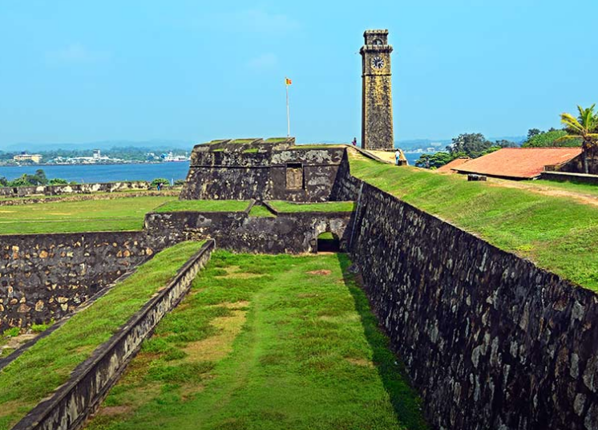
Dutch |

Light |
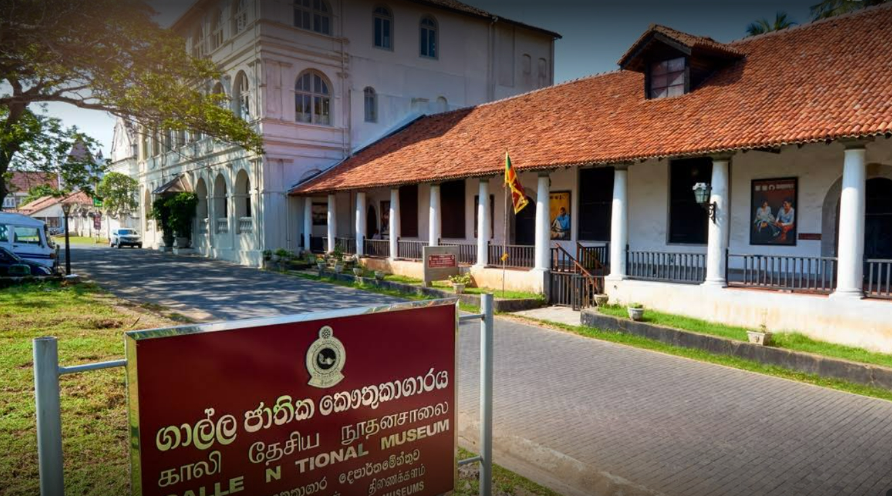
National Museum |
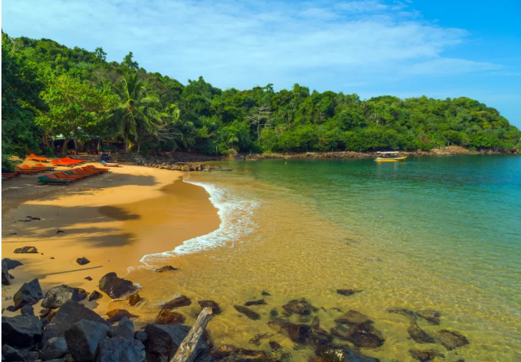
Unawatuna Beach |
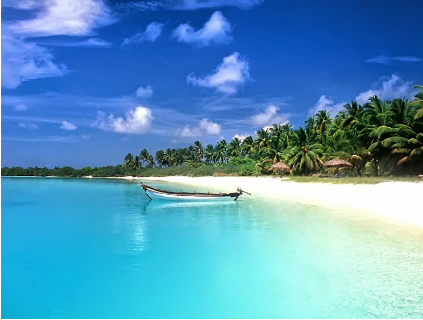
Hikkaduwa Beach |
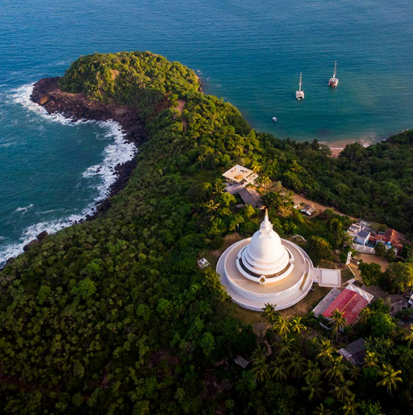
Rumassala Sanctuary |
Anuradhapura is the first capital of Sri Lanka located in north central province of Sri Lanka. It is one of the ancient capitals of Sri Lanka which was the center of Theravada Buddhism for many centuries. Due to its ruins of an ancient Sri Lankan civilization UNESCO named it as a UNESCO world heritage site in 1982 under the name of Sacred City of Anuradhapura.
Anuradhapura is greatest monastic city of the ancient world that dates back to 5th Century BC remained the majestic seat of the kingdom of Sri Lanka until the 11th century A.D. Anuradhapura flourished as the Capital of Lanka from 377 BC to the end of the reign 1017 AD and was the Royal Seat for 1400 years under 130 kings as the capital of the Country.
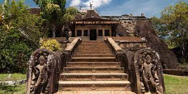Anuradhapura was Sri Lanka’s first Planned City and the First Historical Capital of Sri Lanka founded in 5th century BC gives a fascinating glimpse of a stately, well laid-out pre-Christian metropolis of massive Buddhist shrines and monasteries, splendid palaces, pavilions, and parks, bathing ponds and vast reservoirs, many of them are masterpieces of architecture, art, sculpture and engineering.
Anuradhapura offers a host of memorable sightseeing highlights. The city had been reserved for the King, his ministers and for commercial activities and the suburbs had been planned as areas serving the city as well as settlements for ascetics.
Site, is replete with renovated monuments, restored edifices, preserved ruins and historical sites where the archaeological excavations are still being continued. Anuradhapura was the cradle of glorious Sinhalese Buddhist civilization.
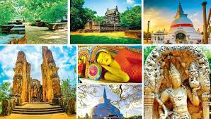 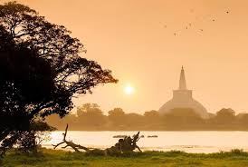 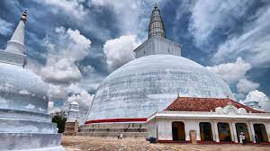 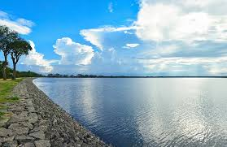Kandy is a large city in central Sri Lanka. It's set on a plateau surrounded by mountains, which are home to tea plantations and biodiverse rainforest. The city's heart is scenic Kandy Lake (Bogambara Lake), which is popular for strolling. Kandy is famed for sacred Buddhist sites, including the Temple of the Tooth (Sri Dalada Maligawa) shrine, celebrated with the grand Esala Perahera annual procession.

This ornate golden-roofed temple houses the most important Buddhist relic in Sri Lanka - a tooth of Buddha brought to the island in the 4th century. The temple was built between 1867 and 1707 specifically to honour this sacred relic, and the temple has long since been a place of importance for both Sri Lankan and international visitors.

If these gardens feel insanely grand, it’s because they were formerly reserved exclusively for Kandyan royals to stroll through before they were transformed into the Botanic Gardens in1821 at the behest of the ruling British. Today, even measly commoners like us are allowed to wander the grounds, which are now home to over 10,000 trees spread across 60 hectares. The gardens also showcase all of Sri Lanka’s unique flora along with representative species from all around the tropical world.
The three temples, Gadaladeniya Viharaya, Ambakke, and Lankathilaka form the aptly named 'three temple loop', and serve as a living history to Sri Lanka's extensive Buddhist heritage and craftsmanship.


The beautiful Bahirawakanda buddha statue sits atop Bahirawa Kanda hill as if overseeing the daily life of Kandyans below. Bahirawakanda offers incredible panoramic views over the green and blue hues of Kandy and beyond and is best to visit at sunset when the city is bathed in a golden glow as the sun drops behind the mountains in the distance.
Once the king's personal garden, Udawattakele is now an urban forest and wildlife sanctuary home to several species of mammals, reptiles, and other animals. There's a hiking path within the sanctuary, which is about a 5km round trip.

Right at the heart of Kandy is the Kandy Lake; surprisingly peaceful despite the bustling road that winds around it, and the backdrop to many of the city’s major attractions including the Temple of the Tooth Relic, and Udawattakele Forest reserve. It takes about an hour to walk the lake’s circumference (just over 3kms)
Travelling through winding roads and lush green valleys, tea estates situated on the slopes and banks of the hills, with tiny streams and water falls and the beautiful misty mountains , one can arrive at Nuwara Eliya town which offers you everything, as any other town does and more.
Its unique climate, and often covered with an early morning mist and the cold tangy air and its fresh and invigorating atmosphere offers a typical English environment. Nuwara Eliya, which is situated among some of the most beautiful tea estates also has the Golf course, race Course, horses, Rose gardens and British style houses which all add up to a perfect vacation retreat, offering a level of perfection without equal.

To see where your morning cuppa originates, head to the Pedro Tea Estate, about 3.5km east of Nuwara Eliya on the way to Kandapola. You can take a 20-minute guided tour of the factory, originally built in 1885 and still packed with 19th-century engineering. However, due to the type of tea produced here ( a very light tea), processing only takes place at night when it’s colder, so you’re unlikely to see much action.
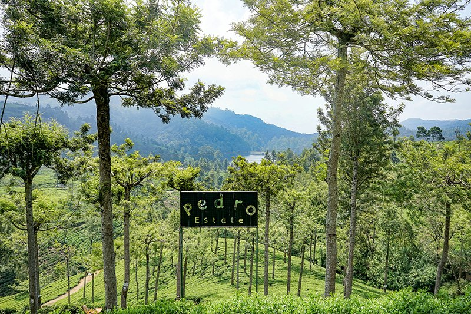These attractive gardens, 10km southeast of Nuwara Eliya, are a peaceful retreat. Highlights include a fine rose garden, a Japanese garden, an orchid collection, cedars and giant cypresses. Planting season is between January and late March and at these times the gardens don't really look their best.
Legend has it that Hanuman, the monkey god, was sent by Rama to the Himalayas to find a particular medicinal herb. He forgot which herb he was looking for and decided to bring a chunk of the Himalayas back in his jaw, hoping the herb was growing on it. The gardens grow on a rock called Hakgala, which means ‘jaw-rock’.
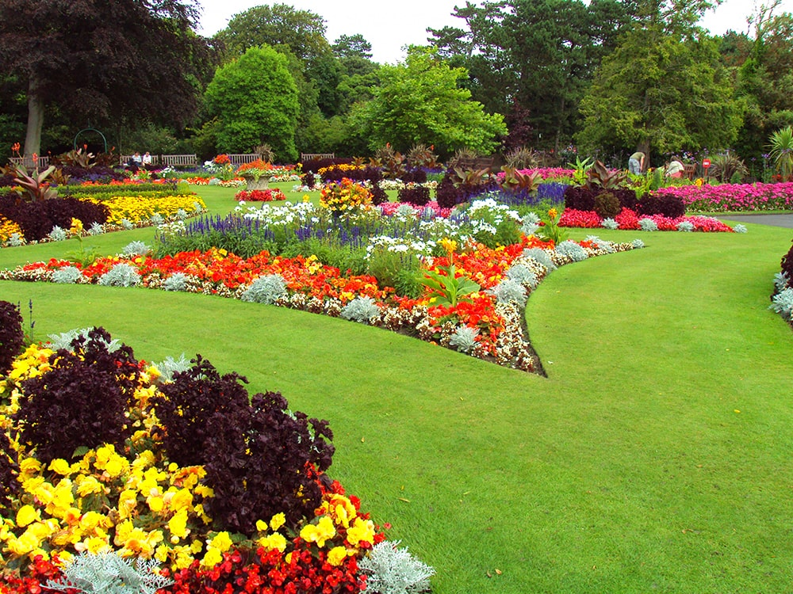Meaning that this is the place which has the highest gap in Sri Lanka. Situated at the border of Nuwara Eliya, Badulla and Ratnapura districts and Horton Plains, which is the highest plain in Sri Lanka. This place highlights the rich bio-diversity of Sri Lanka. This is a trail with remarkable diversity of terrain, weather, vegetation etc. It starts off with a stretch across the beautiful paddy fields. Climb through pines plots, grass lands, Montana forest patches, tea estates and finally through a cloud forest to reach Worlds End. One can view the town of Balangoda which is located way below your point of observation. Walk alone through the silent plain of Horton plain to the end of the world.
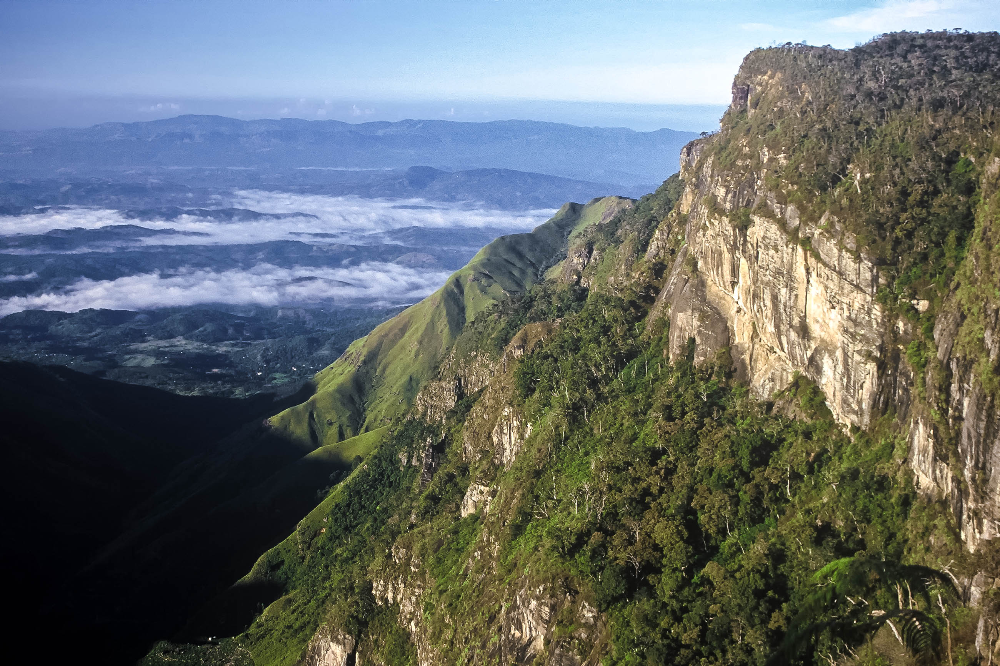One of Sri Lanka's newest (2006) and smallest (29 sq hectares) national parks, Galway's Land is a dense patch of montane forest a couple of kilometres east of town. It is renowned for its birdlife, including 10 Sri Lankan endemics, as well as buffalo, wild boar, barking deer and other mammals. There's very little on-site information, but guides are available (by donation) from the park office and a 2km-long walking trail also leaves from here.
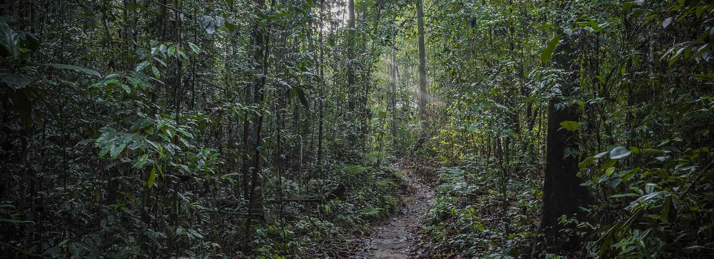This is one of the country's most attractive, and best-maintained, town parks. A stroll around its paths, past manicured lawns, is a pleasure. The park comes alive with flowers around March to May, and August and September. It’s also home to quite a number of hill-country bird species, including the Kashmir flycatcher, Indian pitta and grey tit.
At the far end of the park is a small children’s playground and miniature train.

This lake is popular with domestic tourists who enjoy strolling the footpaths, taking out a swan-shaped pedal boat or trotting around on a pony. However be warned that jet skis and speedboats disturb the peace on weekends, and during holiday times expect big crowds and funfairs. There are picnic tables, a small restaurant and a snack bar. Boat hire is from the smaller adjoining lake on the opposite side of the road from the main lake.
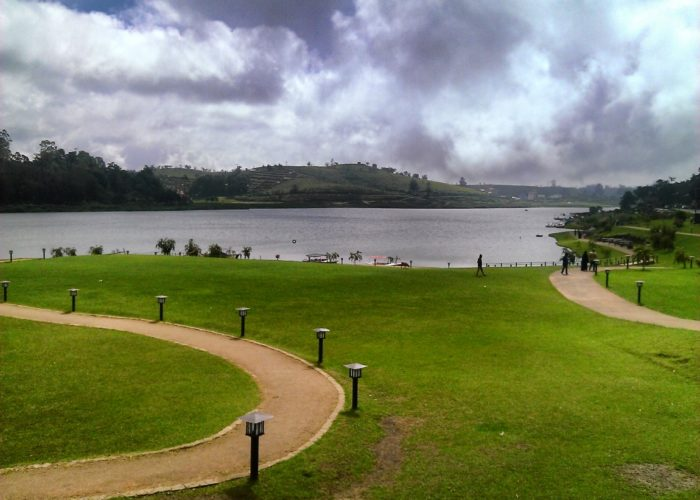Galle is a main tourist attraction destination in Sri Lanka, which is situated on the southwestern tip. It has a long history dating back to the past. It is a UNESCO World Heritage City.
There are many places to visit and many things to do in Galle. Galle has it all, historic colonial sights, meditative temples, sandy beaches and rivers teeming with wildlife, all of which make this southern seaside escape a must-see on most Sri Lankan travel itineraries.Being a coastal area, it is quite hot and humid but has an abundance of beautiful beaches.
| 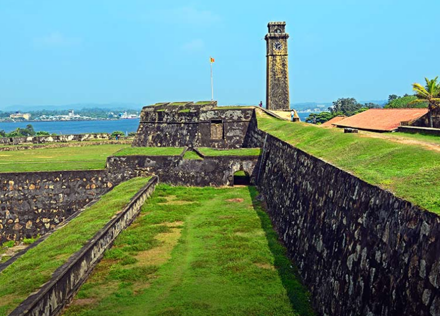
Dutch |
Light |
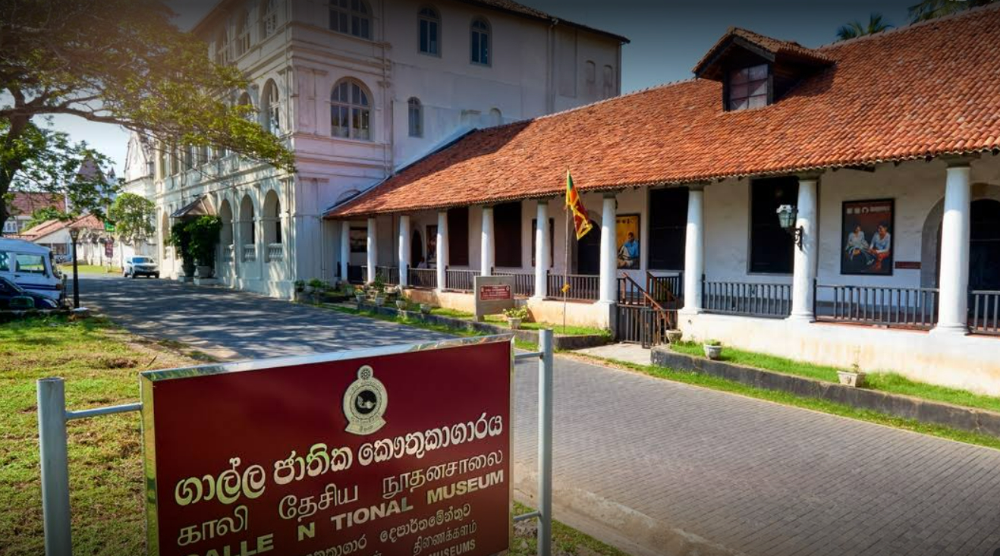
National Museum |
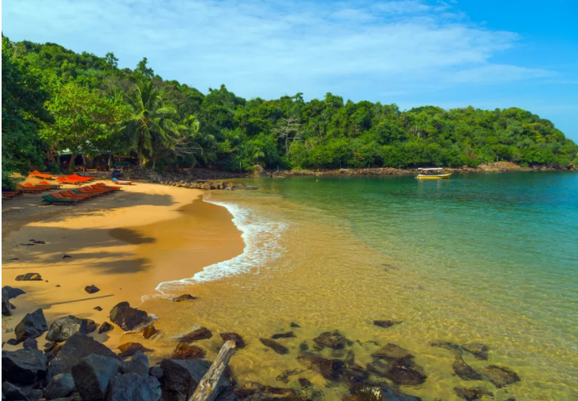
Unawatuna Beach |
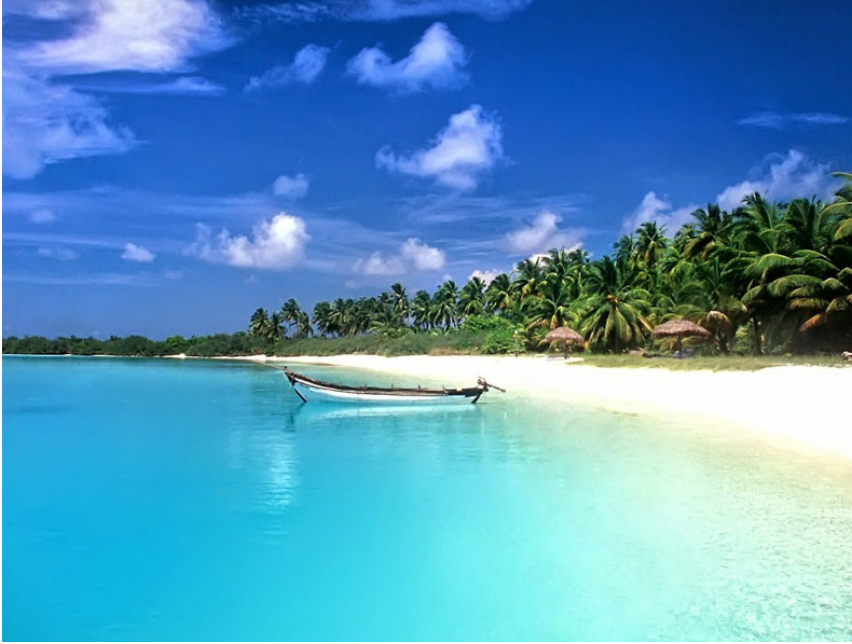
Hikkaduwa Beach |
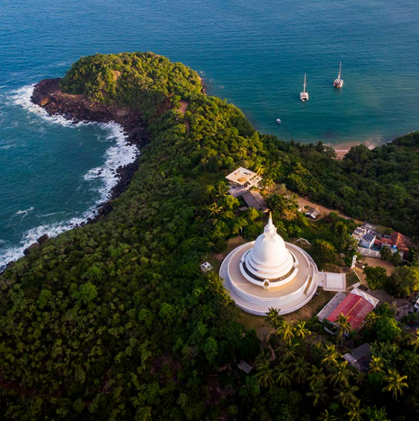
Rumassala Sanctuary |
| 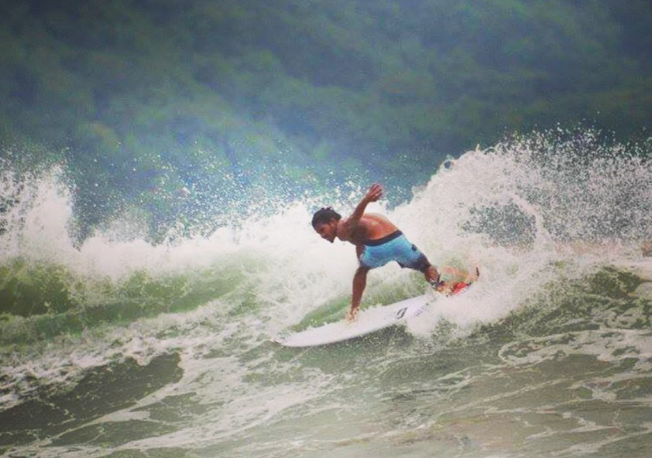
Surfing |
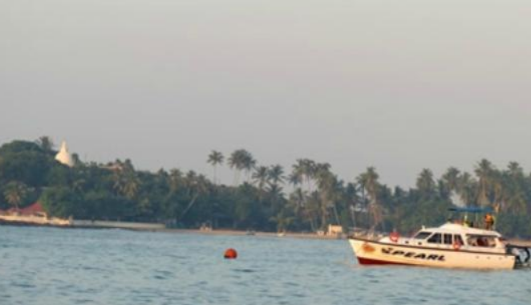
Whale Watching |
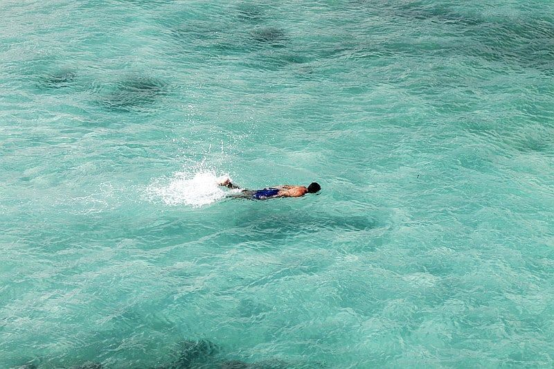
Swimming |
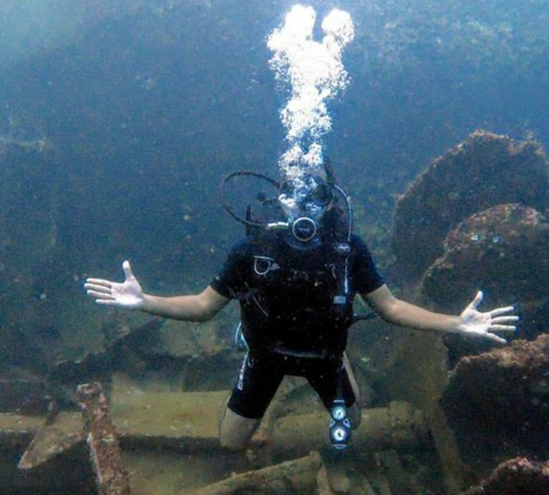
Scuba Diving |
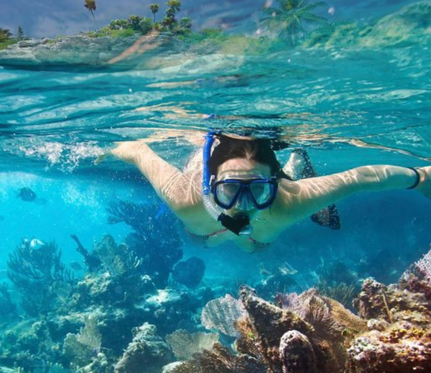
Snorkeling |
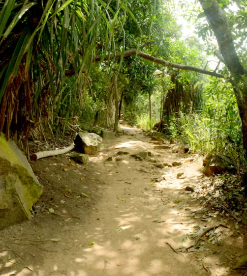
Hiking |